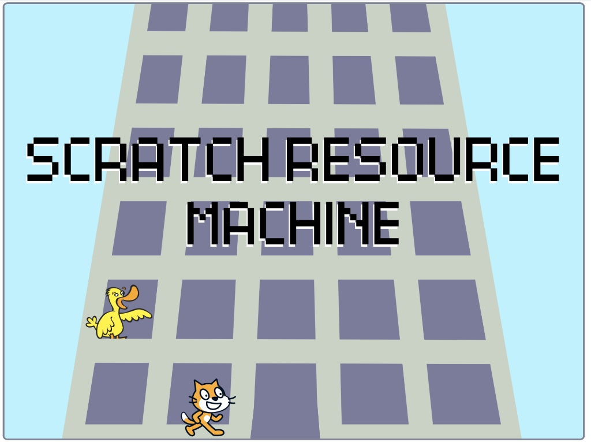

Falls ... dann ..., sonst ...
🍕 🍝 🤷🏻♀️
Möchtest du lieber Pizza oder Pasta. In unserem Alltag gibt es immer wieder schwierige Entscheidungen, die wir treffen müssen 🙃.
Auch ein Programm kann sich entscheiden das eine oder das andere zu tun. Es braucht dazu einen sogenannten Verzweigungsbefehl. Im Gegensatz zu uns Menschen leidet ein Computer nur selten unter Entscheidungsschwierigkeiten.
Es gibt zwei Typen von Verzweigungsbefehlen, siehe Tab. 1. Beide Befehle benötigen eine sogenannte Bedingung, die entweder «wahr» oder «falsch» ist. Diese Bedingung entscheidet schlussendlich, ob die Befehle in der Verzweigung auch ausgeführt werden.
falls < A >, dann
wenn A wahr
ende
|
Die Befehle welche sich in diesem Zangenbefehl befinden, werden nur ausgeführt, wenn die Bedingung A wahr ist. Ist A falsch, so werden die Befehle übersprungen. |
falls < A >, dann
wenn A wahr
sonst
wenn A falsch
ende
|
Die Befehle welche sich in der oberen Zange befinden, werden nur ausgeführt, wenn die Bedingung A wahr ist. Ist A falsch, so werden nur die Befehle in der unteren Zange nach dem «sonst» ausgeführt. |
Tab. 1 – Grundlegende Verzweigungsbefehle
Boolesche Ausdrücke
Eine Grösse die nur den Wert «wahr» oder «falsch» annehmen kann, nennt man einen Booleschen Ausdruck. Benannt sind sie nach dem englischen Mathematiker George Boole, der sich im 18. Jh. mit der Logik von solchen Ausdrücken befasst hat.
Scratch kennt drei verschiedene boolesche Vergleichsoperatoren.
< (A) = (B) > |
Gleichheitsoperator Dieser Operator ist «wahr», wenn beiden Ausdrücke A und B gleich sind. Ist das nicht der Fall, ist er «falsch». |
< (A) > (B) > |
"Grösser als"-Operator Dieser Operator ist «wahr», wenn der linke Ausdruck A grösser als der rechte Audruck B ist. Ist das nicht der Fall, ist er «falsch». |
< (A) < (B) > |
"Kleiner als"-Operator Dieser Operator ist «wahr», wenn der linke Ausdruck A kleiner als der rechte Ausdruck B ist. Ist das nicht der Fall, ist er «falsch». |
Tab. 2 – Vergleichsoperatoren
Machen wir dazu ein Beispiel. Übernimm das Programm von Prog. 1. In diesem Beispiel kannst du sehen, wie man die drei Vergleichoperatoren verwenden kann um dem Benutzer zu sagen, ob eine eingegebene Zahl positiv, negativ oder null ist.
Wenn die grüne Flagge angeklickt
frage [Gib eine Zahl ein.] und warte
falls < (Antwort) < (0) >, dann
sage [Die Zahl ist negativ.]
ende
falls < (Antwort) = (0) >, dann
sage [Die Zahl ist null.]
ende
falls < (Antwort) > (0) >, dann
sage [Die Zahl ist positiv.]
ende
Prog. 2 – Beispiel für die Anwendung der drei Vergleichsoperatoren.
Es ist möglich Booleschen Ausdrücke zu verknüpfen. Man verwendet dazu die folgenden Befehle aus Tab. 3.
< < A > und < B > > |
Und-Verknüpfung Sie ist nur dann «wahr», wenn beiden Ausdrücke A und B gleichzeitig wahr sind. Ist das nicht der Fall, ist die Und-Verknüpfung «falsch».
|
|||||||||||||||||||||||||||
< < A > oder < B > > |
Oder-Verknüpfung Sie ist nur dann «falsch», wenn die Ausdrücke A und B gleichzeitig «falsch» sind. Ist das nicht der Fall, ist die Oder-Verknüpfung «wahr».
|
|||||||||||||||||||||||||||
< nicht < A > > |
Nicht-Operator Dieser Operator kehrt den Zustand des Booleschen Ausdruckes um. Ist der Ausdruck A «falsch», so ist Nicht-A «wahr» und umgekehrt. Ist der Ausdruck A «wahr», ist Nicht-A «falsch».
|
|||||||||||||||||||||||||||
Tab. 3 – Und- Oder-Verknüpfung und Nicht-Operator
Machen wir auch dazu ein Beispiel, siehe Prog. 2. Dieses Programm soll einen einfachen Chatbot darstellen. Man wird zuerst aufgefordert seine Präferenzen einzugeben und wird dann je nach Eingabe mit Kommentaren eingedeckt. Du kannst auch selber noch weitere Kommentare zu anderen Antwortkombinationen einfügen.
Wenn die grüne Flagge angeklickt
frage [Pizza, Pasta oder Salat?] und warte
setze (Essen) auf (Antwort)
frage [Sport, Musik oder Mathe?] und warte
setze (Fach) auf (Antwort)
frage [TikTok, Insta oder Facebook?] und warte
setze (Socialmedia) auf (Antwort)
falls < <(Essen)=[Pizza]> und < (Fach) = [Mathe] > >, dann
sage [Beweg dich doch etwas mehr. Sheldon.] für (3) Sekunden
ende
falls < <(Essen)=[Pizza]> und < (Fach) = [Sport] > >, dann
sage [Wer sich viel bewegt muss auch viel essen.] für (3) Sekunden
ende
falls < <(Socialmedia)=[Insta]> oder < (Socialmedia) = [Facebook] > >, dann
sage [Ich poste auch ab und zu mein Essen.] für (3) Sekunden
ende
falls < nicht < (Fach) = [Musik] > > , dann
sage [Spielst du ein Instrument?] für (3) Sekunden
ende
sage [Erzähl mir doch das nächste mal mehr.] für (3) Sekunden
sage [Tschüss] für (3) Sekunden
Prog. 1 – Beispiel für die Anwendung der Verknüpfungsoperatoren und des Nicht-Operators am Beispiel eines simplen Chatbots.
Aufgabe
Vereinfache die folgenden Booleschen Audrücke.
- wahr und falsch = ?
- wahr oder falsch = ?
- wahr und (nicht falsch) = ?
- falsch oder (nicht wahr) = ?
- nicht (falsch oder wahr) = ?
- wahr oder ( (nicht falsch) und ( nicht wahr) ) oder (falsch und wahr) = ?
- (falsch und wahr) oder (nicht falsch) = ?
- falsch und (falsch oder wahr) und ( wahr und wahr ) = ?
Aufgabe
Untersuche, wie Scratch die Boolschen Ausdrücke behandelt. Was stellst du fest? Verstehst du was passiert?
-
sage < (1) = (1) > -
sage < (1) = (0) > -
sage < [A] = [B] > -
sage < [B] > [A] > -
sage < [A] > [B] > -
sage < [A] = [a] > -
sage < [A] > (3) > -
sage < [99] > [A] >
Der Modulo-Operator
Computer können sehr effizient mit ganzen Zahlen (...,-2,-1,0,1,2, ...) rechnen. Glücklicherweise können sie auch mit Fliesskommazahlen (eine Teilmenge der Dezimalzahlen) rechnen. Beispiele sind 0.2, 0.5665. Allerdings ist die Berechnung von Fliesskommazahlen in der Regel aufwendiger für den Computer. In der Informatik verwendet man oft den «Modulo»-Operator, wenn man zwischen verschiedenen Zahlensystemen umrechnen möchte.
( [abrunden v] von ((7)/(3)) ) |
Ganzzahldivision Mit dieser Konstruktion kann man eine Ganzzahldivision durchführen. Das Resultat lautet 7 / 3 = 2 Rest 1. Somit ergibt der dargestellte Befehl als Resultat 2. |
( (7) mod (3) ) |
Modulo-Operator Der Modulo-Operator ermittelt den Rest der Ganzzahl-Division. Im Beispiel ist 7/3 = 2 Rest 1. Ergibt der dargestellte Befehl als Resultat 1. |
Tab. 3 – Die Ganzzahl-Division und der Modulo Operator
Aufgabe
Gib die folgenden Befehle in Scratch ein. Überlege dir zuvor, was das Resultat sein wird. Verstehst du was passiert?
-
sage ( (7) mod (2) ) -
sage ( (6) mod (2) ) -
sage ( (9) mod (3) ) -
sage ( (11) mod (3) )
Aufgabe
Schreibe ein Programm, bei welchem man eine Zahl eingeben muss. Es wird dann überprüft, ob die Zahl gerade oder ungerade ist.
Aufgabe
Schreibe ein Programm, bei welchem man zwei Zahlen a und b eingeben muss. Es wird dann folgendes ausgegeben: a/b = q Rest r, wobei q das Resultat der Ganzzahl-Division von a und b und r der Rest ist.
Scratch-Resource-Machine

Abb. 1 – Startbildschirm von Scratch Resource Machine.
Nun bist du soweit, dass du Scratch helfen kannst bei seiner Büroarbeit. Scratch hat vor kurzem eine neue Stelle erhalten in einer Firma für Datenverarbeitung. Er ist sehr motiviert. Leider ist der Chef sehr unfreundlich. Scratch möchte diesen Job unbedingt behalten. Hilf ihm durch die neuen Level hindurch. Klicke auf den folgenden Link:
Scratch Resource Machine - Etage 1
Scratch Resource Machine - Etage 2
Du musst in das Projekt hineinschauen und dann bei Scratch die entsprechenden Regeln programmieren. Verwende alles was du in diesem Kapitel gelernt hast. Als Beispiel ist bei Prog. 2 die Lösung vom ersten Level gezeigt.
Wenn ich [start v] empfange
wiederhole fortlaufend
nimm eine Kiste vom IN :: #ED7082
lege die Kiste ins OUT :: #ED7082
ende
Prog. 2 – Lösung für das 1. Level von Scratch Resource Machine.
Hat es geklappt? Super, gratuliere. Das nächste mal wenn du Schwierigkeiten hast zu entscheiden ob 🍟 oder 🥙 wirf doch einfach eine Münze. Das wärs gewesen. Viel Spass mit deinem neuen Wissen. Denk daran
Auch falsche Entscheidungen können zum richtigen Ergebnis führen.
Gennen, Niklas
😁

Einsteigerkurs für den BBC micro:bit von T. Jenni, et al. ist lizenziert unter einer Creative Commons Namensnennung - Nicht-kommerziell - Weitergabe unter gleichen Bedingungen 4.0 International Lizenz.